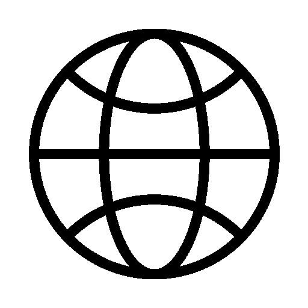

What You'll Discover
A comprehensive research database containing detailed information on every creature in Monster Hunter Wilds.

Complete Monster Database
Detailed profiles of all monsters including stats, weaknesses, and behavioral patterns.

Habitat Information
Ecological data on where monsters live, their territorial behaviors, and environmental interactions.

Combat Analysis
Strategic combat information including attack patterns, elemental weaknesses, and hunting tips.

Material Cataloging
Complete material drop information for crafting weapons, armor, and items.